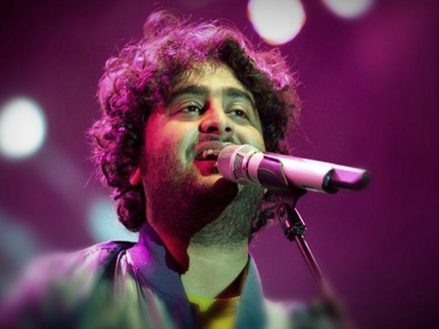

ARIJIT SINGH
Arijit Singh (born 25 April 1987) is an Indian singer and music composer. He sings predominantly in Hindi, Bengali but has also performed in various other Indian languages.He is the recipient of a National Award and a record six Filmfare Awards. Arijit Singh is often cited as one of the best singers ever in the Indian and Pakistani music industry and has established a huge fan base throughout South Asia. He is also known as the "King of playback singing".
Arijit Singh began his career when he participated in the contemporary reality show, Fame Gurukul in 2005, but didn't receive widespread recognition before the release of "Tum Hi Ho" and "Chahun Main Ya Naa" in 2013. He was declared the most-streamed Indian artist of the year 2020 by Spotify. He is the most followed Asian soloist on Spotify.